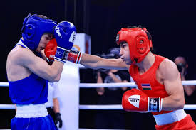
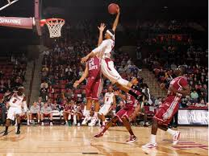

üá∫üáø The Uzbekistan National Football Team
The Uzbekistan national football team represents our country in international matches. It was founded in 1992 after Uzbekistan became independent. The team is controlled by the Uzbekistan Football Association.
The national team’s nickname is "The White Wolves", and their home stadium is the Milliy Stadium in Tashkent. The team’s colors are white, blue, and green — the same as the national flag.
Uzbekistan has produced many talented players such as Server Djeparov, Eldor Shomurodov, and Jasur Yakhshiboev. The team has played in the AFC Asian Cup several times and is working hard to qualify for the FIFA World Cup in the future.
Football is one of the most popular sports in Uzbekistan, and fans proudly support their team with great passion and love.
üèä‚Äç‚ôÇÔ∏è Swimming
Swimming is one of the most popular and healthy sports in the world. It helps people stay fit, strong, and relaxed. Many people enjoy swimming not only as a sport but also as a fun activity during the summer.
There are different styles of swimming such as freestyle, backstroke, breaststroke, and butterfly. Each style requires technique, balance, and good breathing control. Swimmers train hard to improve their speed and endurance.
Swimming competitions are held at local, national, and international levels. The most famous swimming events take place in the Olympic Games. Great swimmers like Michael Phelps and Katie Ledecky have inspired millions of people around the world.
In Uzbekistan, swimming is becoming more popular every year. Many young athletes dream of representing our country in international championships. Swimming teaches discipline, patience, and confidence — it is truly a wonderful sport.
:
üèê Volleyball Players
Volleyball is an exciting and dynamic sport that requires teamwork, speed, and quick thinking. Volleyball players train hard to improve their jumping, serving, and spiking skills. The game is played by two teams of six players who try to send the ball over the net and score points.
Professional volleyball players need to be strong, flexible, and focused. They also need good communication and cooperation with their teammates. Every player has an important role — setter, spiker, blocker, or libero — and each position helps the team win.
Volleyball competitions are held at schools, universities, and international levels, including the Olympic Games. Famous players like Karch Kiraly, Giba, and Zhu Ting have shown the beauty and power of this sport.
In Uzbekistan, volleyball is becoming more popular, especially among young people. Many dream of representing our country in big tournaments. Volleyball players are known for their teamwork, discipline, and positive energy both on and off the court.

ü•ä Boxers
Boxing is one of the oldest and most powerful sports in the world. It requires strength, discipline, and courage. Boxers train every day to improve their speed, stamina, and technique. They must stay focused and calm even in the most intense moments of a match.
A boxing match is fought between two opponents in a ring. Each boxer tries to score points by landing clean punches while avoiding hits from the opponent. Good boxers have fast reactions, strong defense, and sharp strategy.
Some of the most famous boxers in history include Muhammad Ali, Mike Tyson, and Manny Pacquiao. They are known not only for their victories but also for their motivation and hard work.
In Uzbekistan, boxing is one of the most successful sports. Uzbek boxers like Hasanboy Dusmatov and Shakhobiddin Zoirov have won gold medals at the Olympic Games and made our country proud. Boxing teaches confidence, respect, and self-control — it is truly a sport of champions.

üèÄ 1. Basketball Players (Version 1)
Basketball is a fast and exciting sport that is loved by millions of people around the world. Basketball players are known for their height, speed, and strong teamwork. They train every day to improve their shooting, dribbling, and passing skills.
The game is played by two teams of five players on the court. The main goal is to score points by throwing the ball into the opponent’s basket. Good players must think quickly, move fast, and communicate well with their teammates.
Famous basketball stars like Michael Jordan, LeBron James, and Stephen Curry have inspired young athletes everywhere. They show that success comes from hard work and passion.
In Uzbekistan, basketball is becoming more popular among young people. Many students play in school tournaments and dream of representing our country in international games. Basketball helps build confidence, teamwork, and discipline — all qualities of a true athlete.

üèÄ 2. Basketball Players (Version 2)
Basketball players are among the most athletic and skillful sportsmen in the world. The sport combines strength, coordination, and intelligence. Every player has an important role — some focus on defense, while others specialize in scoring points.
To be a good basketball player, one must train regularly, practice shooting, and build endurance. The sport requires not only physical ability but also quick decision-making and teamwork.
Basketball competitions, such as the NBA and the Olympic Games, bring together the best players from around the globe. Legends like Kobe Bryant, Shaquille O’Neal, and Giannis Antetokounmpo have made basketball a global passion.
In Uzbekistan, basketball continues to grow with more youth joining clubs and training centers. The sport encourages friendship, fair play, and a healthy lifestyle. Every basketball player dreams of hearing the crowd cheer as they score the winning point!